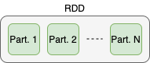
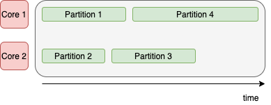
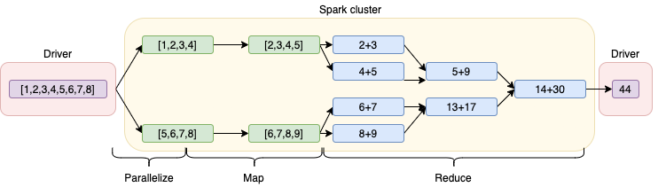
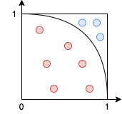

16 Lab: Spark 1, RDDs and map-reduce
- Notebook:
code/spark/notebooks/Lecture1.ipynb(solutions:Lecture1_solutions.ipynb) - Stack:
spark-master+spark-worker(×N) +jupyter-notebook, see Running the labs - Theory: Apache Spark: driver/executors, RDDs, transformations vs actions, the DAG. Also MapReduce
- You will: connect to a cluster, distribute a list, write map/reduce pipelines, count words, estimate π, and fit a line with a distributed gradient descent
16.1 The idea behind it
Spark generalises MapReduce (theory) with three ideas that this lab makes visible:
- Data is partitioned across workers, and code is shipped to it. Your lambdas are serialised and sent to the executors; only results come back.
- Lazy evaluation and the DAG. Transformations only build a graph; an action makes the scheduler cut it into stages at every shuffle and run one task per partition. Narrow transformations (
map,filter) need no data movement and are pipelined in one stage; wide ones (reduceByKey) need a shuffle and start a new stage. - Resilience through lineage. An RDD remembers how it was computed. If an executor dies, Spark recomputes the lost partitions from that recipe instead of keeping replicas. This is the “R” in RDD, and the reason recomputation (and therefore caching) matters.
16.2 Before you start
cd code/spark
docker compose up --scale spark-worker=2 # two workers make the parallelism visibleKeep three browser tabs open:
| Tab | What it shows |
|---|---|
localhost:1234 |
Jupyter, where you open notebooks/Lecture1.ipynb |
localhost:8080 |
master UI: registered workers, their cores and memory, running applications |
localhost:4040 |
application UI (exists only while your SparkSession is alive): jobs, stages, tasks, storage |
The habit to build in this lab is: run a cell, then look at 4040 to see what Spark actually did.
16.3 Connecting: the SparkSession
from pyspark.sql import SparkSession
spark = SparkSession.builder \
.master("spark://spark-master:7077") \
.appName("My first spark application") \
.config("spark.executor.memory", "512m") \
.getOrCreate()
sc = spark.sparkContext # the entry point for RDDsWhat happens: the notebook becomes the driver of a new application. The master allocates it executors on the workers (one per worker here, with the memory you asked for). Refresh :8080 and the application appears; open :4040 to follow it.
getOrCreate() reuses an existing session, so re-running the cell is harmless. Changing configuration requires spark.stop() first.
16.4 Parallelize, partitions and laziness
data = [1, 2, 3, 4, 5, 6, 7, 8]
dist_data = sc.parallelize(data) # nothing happens yet
dist_data.count() # now a job runsAfter parallelize, the application UI shows no job. parallelize is a transformation: it only records what to do. count() is an action: it needs a result, so Spark finally builds the plan and runs it. This laziness is the most important idea of the lab: you write a whole pipeline of transformations, and nothing runs until an action asks for a value.
In the job’s stage view you will see one task per partition. An RDD is split into partitions, and a partition is the unit of parallelism: one core processes one partition at a time.


sc.parallelize(data, numSlices=8).getNumPartitions() # 8
dist_data.getNumPartitions() # default ≈ number of coresFewer partitions than cores leaves cores idle; many more partitions than cores adds scheduling overhead. Always check what you got.
Where the data lives. print(dist_data) prints a description, not numbers: the data is in the executors. Bringing it back is explicit:
| Action | Brings back | Use |
|---|---|---|
collect() |
everything, to the driver | only for small, final results |
take(n) |
the first n elements (reads as few partitions as needed) |
peeking at data |
count(), reduce(f), min()… |
one value | aggregates |
collect() on a large RDD is the classic way to crash the driver (out of memory).
16.5 Map and reduce
map(f) applies f to every element (a transformation); reduce(f) combines elements pairwise until one value is left (an action):
dist_data.map(lambda x: x + 1).collect() # [2, 3, ..., 9]
dist_data.map(lambda x: x + 1).map(lambda x: x / 2).collect()
dist_data.map(lambda x: x + 1).reduce(lambda x, y: x + y) # 44
map works on each element independently; reduce combines pairs until a single value remains.Unlike Hadoop, Spark is not limited to one map followed by one reduce. You can chain any number of transformations. In the UI, the two chained maps appear as one stage: the DAG scheduler pipelines them, so each element goes through both functions in one pass without intermediate storage.
The reduce function must be associative and commutative (sum, min, max…), because partitions are reduced independently and then combined in arbitrary order.
16.5.1 Exercises 1–2
Find the minimum of dist_data with reduce.
Solution. dist_data.reduce(lambda x, y: min(x, y)). Any two-argument function works, so dist_data.reduce(min) also does, and for this common case there is the built-in action dist_data.min().
Create 100 random 3D points on the client, distribute them, and find the largest distance from the origin.
Solution.
import random
points = [(random.random(), random.random(), random.random()) for _ in range(100)]
sc.parallelize(points) \
.map(lambda p: (p[0]**2 + p[1]**2 + p[2]**2) ** 0.5) \
.reduce(max)The lesson is the cost model: generating data on the client and parallelize-ing it moves it through the driver to the executors. Fine for 100 points; for real data, read it directly on the workers (exercise 4).
16.5.2 Intermezzo: broadcast variables
If every task needs the same small object (a lookup table, parameters), referencing it inside a lambda ships a copy with every task. sc.broadcast(obj) sends it once per executor and keeps it there:
lookup = sc.broadcast({"a": 1, "b": 2, "c": 3})
sc.parallelize(["a", "b", "c", "a", "d"]).map(lambda k: lookup.value.get(k, 0)).collect()16.5.3 Exercise 3: estimate π
Throw random points in the unit square and count those inside the quarter circle: \(\pi \approx 4\,N_\text{in}/N\).

The trick is that the points are generated on the workers. You only distribute placeholders:
num_points = 100_000
points_rdd = sc.parallelize([0] * num_points, numSlices=8) # 8 tasks
inside = points_rdd.map(lambda _: random.random()**2 + random.random()**2) \
.filter(lambda r2: r2 < 1) \
.count()
print("pi =", 4 * inside / num_points)filter(f) keeps the elements where f is true. The first solution uses map to 0/1 and reduce(+) instead; both give the same result.
16.6 Key–value pairs, reduceByKey, flatMap
Many problems are “aggregate per key”. Store elements as (key, value) tuples:
class_rdd = sc.parallelize([('group1', 10), ('group2', 4), ('group3', 1),
('group2', 7), ('group1', 8)])
class_rdd.mapValues(lambda v: v + 1) # touch values, keep keys
class_rdd.reduceByKey(min).collect() # one result per key
class_rdd.reduceByKey(max).takeOrdered(2, key=lambda kv: -kv[1]) # top-2 by valuereduceByKey is a transformation, despite its name, because its result can still be huge (one entry per key). It is also the first operation here that needs a shuffle: values with the same key must be brought to the same partition, which moves data between workers. In the UI this shows up as a new stage. Shuffles are where distributed jobs spend their time.
flatMap(f) is map where f returns a list, then flattens all lists into one RDD: one element in, any number out.
16.6.1 Exercise 3b: word count
The MapReduce “hello world”, now in three lines:
words = sc.parallelize(message).flatMap(clean_row) # line → list of clean, lowercase words
counts = words.map(lambda w: (w, 1)).reduceByKey(lambda a, b: a + b)
counts.takeOrdered(10, key=lambda kv: -kv[1]) # the 10 most frequent wordsclean_row strips punctuation (string.punctuation) and lowercases, so “Ring,” and “ring” count as the same word.
16.7 Exercise 4: distributed linear regression
The most complete example of the lab. Files datasets/lecture1/file_*.txt hold lines like Measure 0: (.05,0.70), some with None values.
Step 1: read on the workers. Instead of reading files in the notebook, distribute the list of file names and let each executor open its own files:
files = [f'/mapd-workspace/datasets/lecture1/file_{i}.txt' for i in range(1, 5)]
data_rdd = sc.parallelize(files).flatMap(parse_file) # parse_file → list of (t, val)The path is the one inside the containers. parse_file uses a regular expression, -?[0-9]*\.[0-9]* twice separated by a comma, to extract the pair, and skips lines without numbers (the None measurements). For plain text, sc.textFile("file:///mapd-workspace/...") does the reading for you. The custom loader is shown because real formats usually need one.
data_rdd.sample(False, 0.2).collect() brings back a random 20% for a quick scatter plot without collecting everything.
Step 2: gradient descent as map-reduce. For the model \(y = w_0 + w_1 x\) and squared loss, the gradient is a sum over points:
\[ \nabla J = \frac{1}{n}\sum_i \big(y(w, x_i) - y_i\big)\,(1,\; x_i) \]
A sum over points is exactly a map (per-point gradient) followed by a reduce (add them up):
W, lr, n = np.array([10, 0.5]), 0.01, data_rdd.count()
for _ in range(20):
grad = data_rdd.map(lambda P: gradient(P, W)).reduce(lambda a, b: a + b)
W = W - lr / n * gradEach iteration is one Spark job: the current W is shipped to the executors inside the lambda, every executor computes partial gradients on its partitions, and only a 2-vector comes back.
Step 3: residuals without collecting. residuals_rdd.collect() + plt.hist works here but would not scale. rdd.histogram(bins) computes the counts on the cluster and returns only the bins:
counts = residuals_rdd.histogram(np.linspace(-1, 1, 50).tolist())
plt.stairs(counts[1], counts[0])16.8 Caching
Open the application UI after the gradient descent: every iteration re-ran everything from the start, re-reading and re-parsing the files 20 times. RDDs are recomputed from their lineage on every action unless you keep them:
data_rdd = data_rdd.persist() # mark for caching (lazy, like any transformation)
data_rdd.count() # first action fills the cache
# ... gradient descent loop: now fast; see the "Storage" tab in :4040
data_rdd = data_rdd.unpersist() # free executor memory when doneCache what you reuse in a loop; don’t cache everything, because memory is limited and caching itself costs time.
16.9 On a real cluster
- Submitting. Instead of a notebook, production jobs are scripts run with
spark-submit --master <yarn|k8s://...|spark://...> job.py, often from a scheduler (cron, Airflow). - Reading data. Files sit in HDFS or object storage and are read by the executors:
sc.textFile("hdfs://namenode:8020/path")or"s3a://bucket/path". Each block becomes a partition, scheduled where possible on the node that stores it (data locality). - Sizing. You choose the number of executors, cores per executor and memory (
--num-executors,--executor-cores,--executor-memory), or let dynamic allocation add and remove executors with the load. A rule of thumb is 2–4 partitions per core. - Failures are normal. With hundreds of nodes, some fail during long jobs; lineage-based recomputation is what makes that a non-event. Very long lineages (e.g. iterative algorithms) are cut with
checkpoint()to reliable storage. - Monitoring uses the same UI you saw on
:4040(and the history server after the job ends). Long stages, skewed tasks and large shuffles are what you look for.
16.10 Wrap up
sc.stop(); spark.stop() # releases the executors: the app disappears from :8080Then docker compose down.
- Transformations are lazy and build a DAG; actions trigger jobs. Learn which is which.
- Partitions are the unit of parallelism: check
getNumPartitions()against your cores. - Move code to data: read files on the workers, and bring back only small results (
take,reduce,histogram, notcollect). reduceByKeyand other per-key operations shuffle data, which costs a new stage.- Persist RDDs you reuse in loops, and unpersist them afterwards.